시장 개요 — 로판은 어디까지 왔나?
2013년 월 13편에서 시작해 2023년 257편으로 10년 만에 195배 성장. 현재는 성숙기 진입 신호가 감지되나 절대 수준은 높게 유지 중.
로판 생애 주기 요약: 도입기(~2017) → 성장기 진입(2017-09, PELT CP1 +275%) → 성장 가속(2019-10, 재혼황후 +32편) → 2차 가속(2020-08, PELT CP2 +86%) → 3차 가속(2022-07, PELT CP3 +37%) → 정점(2023) → 성숙기 진입(2024-04~)
플랫폼별 월별 신작 수 (2013~2026)
카카오페이지 · 네이버시리즈 · 네이버웹툰 분리 집계
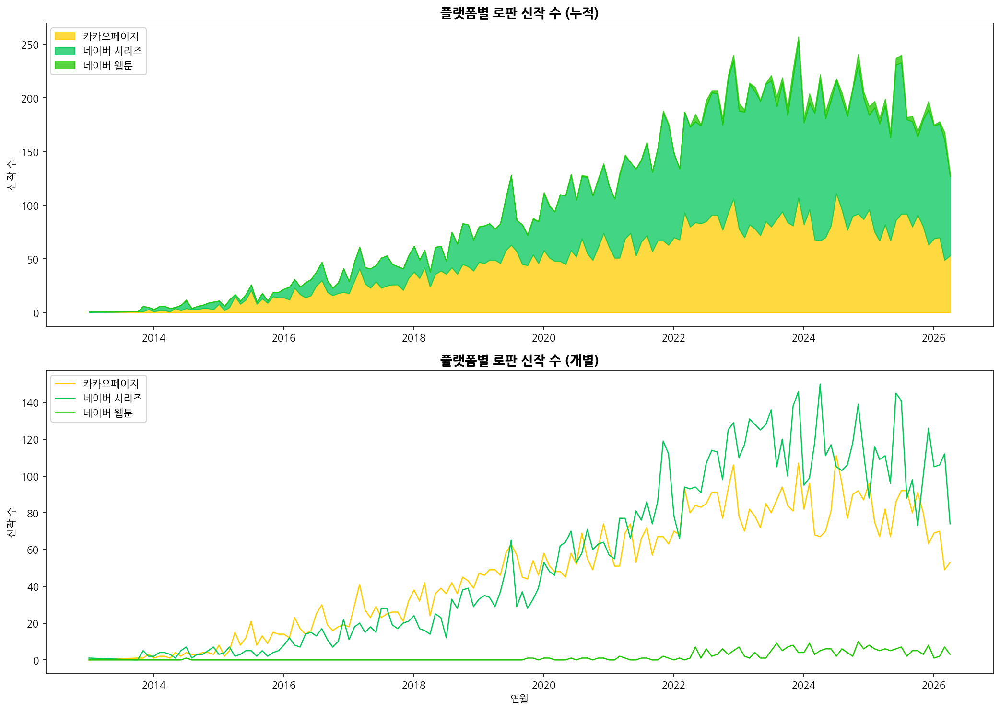
STL 분해 — 추세 / 계절성 / 잔차 분리
STL(Seasonal-Trend-Loess)로 시계열을 3개 성분으로 분해. 2013년 초반 결측 8개월 선형 보간 후 재실행. 추세 기울기 +1.62편/월(연간 +19.4편), R²=0.9466.
계절성 패턴: 7월(+9.2편), 12월(+5.0편) 성수기 / 10월(-11.2편), 3월(-5.5편) 비수기 |
잔차 이상치: 2019-07(+48.2편, 4.4σ), 2021-09(-32.0편) 등 특정 달에 예상과 크게 다른 신작 수
STL 분해: 원본 · 추세 · 계절성 · 잔차
period=12, robust=True
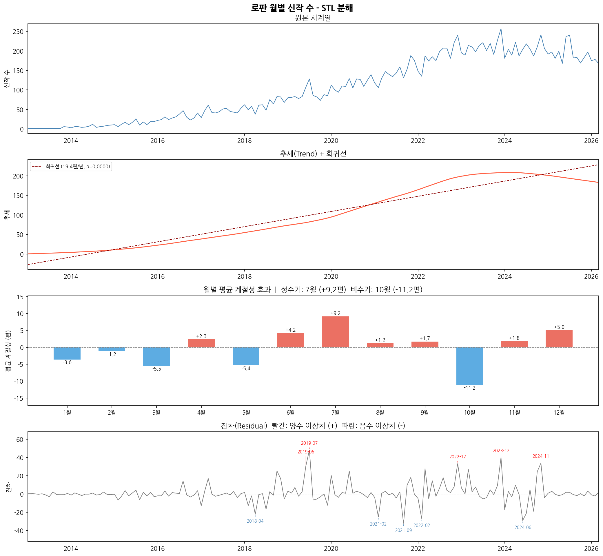
PELT 변동점 — 언제 시장이 구조적으로 바뀌었나?
PELT(Pruned Exact Linear Time) 알고리즘으로 신작 수의 구조적 변동점 자동 탐지. penalty 1~99 Elbow Method 자동 탐색 → penalty=7 선택, 3개 변동점 탐지.
CP1 (2017-09): 20.9편 → 78.4편 (+275%) |
CP2 (2020-08): 78.4편 → 146.0편 (+86%) |
CP3 (2022-07): 146.0편 → 200.5편 (+37%)
세 변동점 모두 알려진 이벤트(재혼황후 2019-10, 선재업고튀어 2024-04)보다 먼저 발생 → 플랫폼 인프라·작가 풀이 선행, 이벤트가 가시화
세 변동점 모두 알려진 이벤트(재혼황후 2019-10, 선재업고튀어 2024-04)보다 먼저 발생 → 플랫폼 인프라·작가 풀이 선행, 이벤트가 가시화
Elbow Method — penalty vs 변동점 수
penalty=7에서 3개 변동점 (자동 선택)
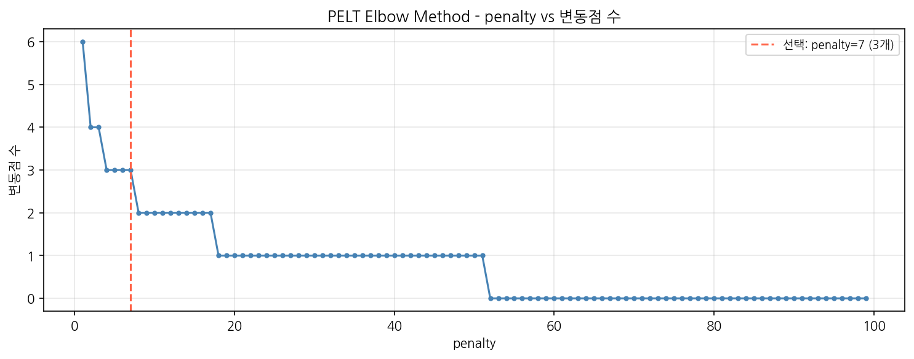
PELT 변동점 탐지 (전체 + 2017 이후 확대)
주황 점선: 변동점 / 보라 점선: 알려진 이벤트
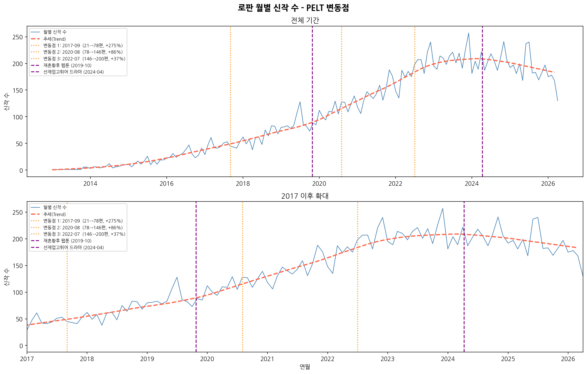
ITS 인과분석 — 이벤트가 실제로 영향을 줬나?
Interrupted Time Series: Y = β0 + β1×time + β2×intervention + β3×time_since
β2: 이벤트 직후 레벨(수준) 변화 / β3: 이벤트 이후 기울기(성장률) 변화
β2: 이벤트 직후 레벨(수준) 변화 / β3: 이벤트 이후 기울기(성장률) 변화
| 이벤트 | β2 (레벨 변화) | p값 | β3 (기울기 변화) | p값 | R² |
|---|---|---|---|---|---|
| E001 재혼황후 웹툰 (2019-10) | +32.1편 | 0.0000 ★ | +0.12편/월 | 0.456 | 0.921 |
| E003 선재업고튀어 드라마 (2024-04) | +6.3편 | 0.475 | -3.33편/월 | 0.0000 ★ | 0.940 |
ITS: 재혼황후 웹툰 연재 시작 (2019-10)
레벨 변화 +32편 ★ / 기울기 변화 비유의
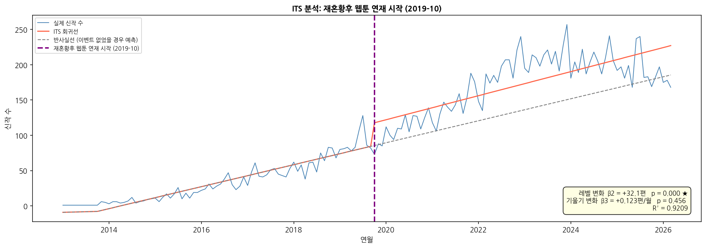
ITS: 선재업고튀어 드라마 방영 (2024-04)
레벨 변화 비유의 / 기울기 변화 -3.33편/월 ★
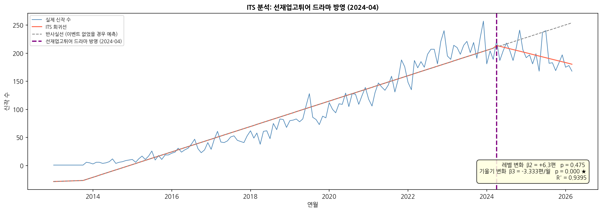
플랫폼별 ITS — 어느 플랫폼에서 효과가 컸나?
3개 플랫폼 × 2개 이벤트 = 6개 ITS 회귀 분석. 재혼황후 효과는 네이버시리즈 중심(전체 +32편 중 75%). 2024년 이후 소설↓ 웹툰↑ 구조 변화 감지.
| 이벤트 | 플랫폼 | β2 (레벨) | p값 | β3 (기울기) | p값 |
|---|---|---|---|---|---|
| E001 재혼황후 | 카카오페이지 | +8.2편 | 0.015 ★ | -0.34편/월 | 0.000 ★ |
| 네이버시리즈 | +24.0편 | 0.000 ★ | +0.38편/월 | 0.001 ★ | |
| 네이버웹툰 | -0.1편 | 0.802 | +0.08편/월 | 0.000 ★ | |
| E003 선재업고튀어 | 카카오페이지 | -2.0편 | 0.611 | -1.49편/월 | 0.000 ★ |
| 네이버시리즈 | +5.7편 | 0.424 | -1.77편/월 | 0.000 ★ | |
| 네이버웹툰 | +2.6편 | 0.001 ★ | -0.08편/월 | 0.108 |
카카오페이지 × E001
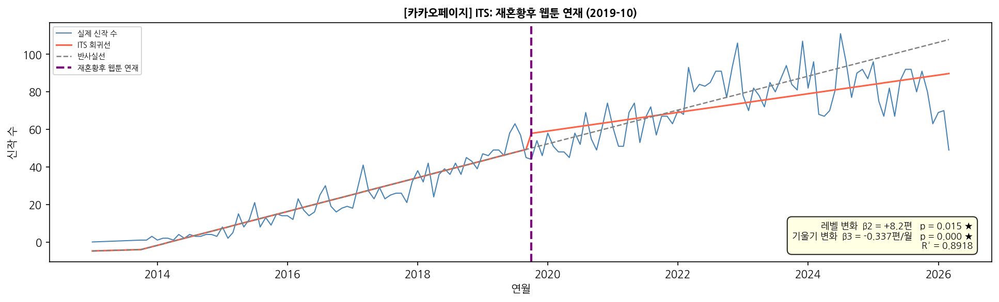
네이버시리즈 × E001
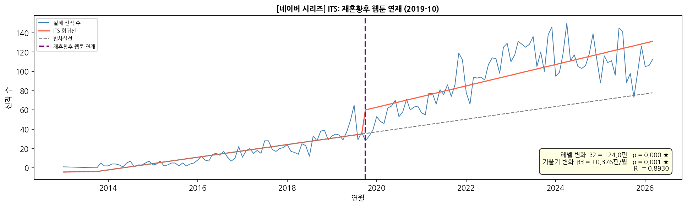
네이버웹툰 × E001
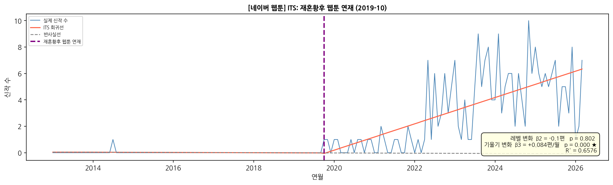
카카오페이지 × E003
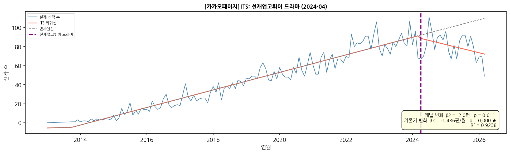
네이버시리즈 × E003
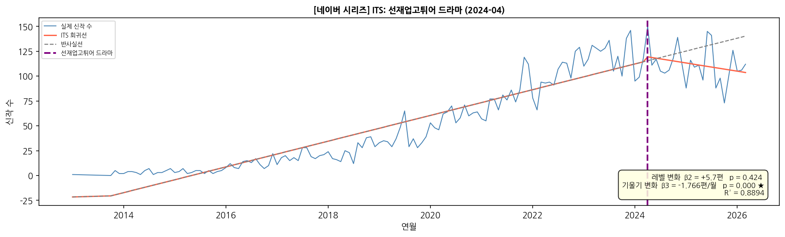
네이버웹툰 × E003
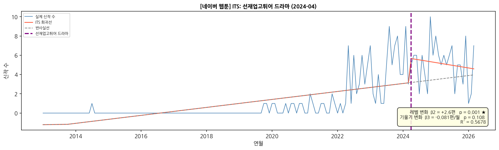
Prophet 예측 — 2026년 하반기 신작 수는?
PELT 변동점(2017-09, 2020-08, 2022-07)을 Prophet에 주입해 2026-04~12 예측. ITS 단기 감속과 달리 Prophet은 10년 전체 추세를 반영해 현 수준 유지 예측.
ITS vs Prophet: ITS는 2024년 이후 단기 감속(-3.33편/월) 포착 / Prophet은 10년 누적 상승 추세 반영 → 209~228편 유지 예측.
두 결과는 모순이 아님 — 성장 속도가 꺾이는 중이지만 절대 수준은 높게 유지되는 성숙기 특징.
두 결과는 모순이 아님 — 성장 속도가 꺾이는 중이지만 절대 수준은 높게 유지되는 성숙기 특징.
Prophet 예측 (2026-04 ~ 2026-12)
주황 점선: 예측 / 주황 음영: 95% 구간
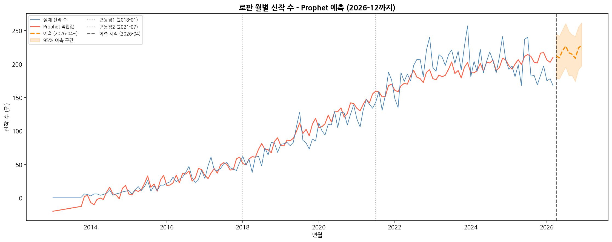
Prophet 컴포넌트 — 추세 & 계절성
추세 방향 + 월별 계절성 패턴
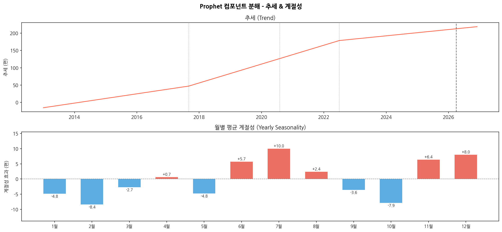
결론 & 시사점
Phase 2~4 분석을 종합한 핵심 메시지와 플랫폼·투자자 관점 제언.
핵심 메시지 1. 로판은 성숙기 진입, 그러나 붕괴는 없다
신작 수 기준 성장 속도는 꺾였지만 월 200편 이상의 공급이 유지. 추산 시장 규모 약 5,059억 원(2024).
신작 수 기준 성장 속도는 꺾였지만 월 200편 이상의 공급이 유지. 추산 시장 규모 약 5,059억 원(2024).
핵심 메시지 2. IP 파이프라인이 다음 성장 동력
소설 플랫폼 신작 감속 vs 네이버웹툰 레벨 상승의 엇갈림. 웹툰화·드라마화 IP 전환이 시장 가치 유지의 핵심.
소설 플랫폼 신작 감속 vs 네이버웹툰 레벨 상승의 엇갈림. 웹툰화·드라마화 IP 전환이 시장 가치 유지의 핵심.
핵심 메시지 3. "레벨 업 이벤트" 패턴이 반복될 수 있다
2017-09 구조 변화(PELT CP1)가 재혼황후(2019-10)보다 약 25개월 먼저였듯, 플랫폼 인프라가 먼저 준비되고 메가 IP가 이를 가시화하는 패턴.
2017-09 구조 변화(PELT CP1)가 재혼황후(2019-10)보다 약 25개월 먼저였듯, 플랫폼 인프라가 먼저 준비되고 메가 IP가 이를 가시화하는 패턴.
| 대상 | 제언 |
|---|---|
| 플랫폼 MD | 여름(7월)·연말(12월) 성수기 라인업 집중, IP 웹툰화 트랙 강화 |
| 콘텐츠 기획사 | 소설 신작 경쟁 심화 — 웹툰·드라마 전환 가능성 있는 IP 선별 집중 |
| 투자자 | 신작 수 감속을 시장 붕괴로 오해 금지. 성숙기 안정화 단계, IP 밸류체인 구조 작동 중 |
※ 시장 규모 추산: DESA Researcher 에이전트 수집 수치 (밸류파인더 리서치, 오픈서베이 — Tier 2). 정밀 추산 아닌 방향성 참고용.